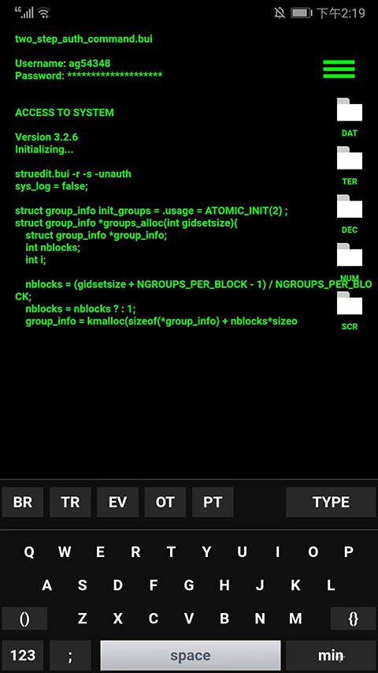

用 GeekTyper 搭一条"假黑客镜头"流水线
做视频需要黑客敲代码画面？以前绿幕合成两小时，现在 GeekTyper 全屏录屏加剪映十五分钟搞定。
我每周要做的一件事
我每个月要交四条短视频，每条里总有那么几秒钟需要"某个角色在操作一台神秘终端"的镜头。以前这件事卡得我不轻。
旧流程：绿幕合成两小时起步
最早用绿幕：架灯、拍一段假装敲键盘的视频、拖进 After Effects、找一个开源终端界面素材、做色键抠像、调边缘羽化、加代码滚动动画、调字体和颜色匹配。一条五秒镜头，保守两小时。中间任何一步出问题——灯没打匀、抠像有毛边、动画节奏不对——全部重来。
后来试过真写代码录屏。打开一个空的 Python 脚本，对着屏幕胡乱敲几行保存运行。结果要么代码跑起来报错，停在红色 traceback 上尴尬到脚趾抠地；要么代码本身太枯燥，纯黑白界面没有电影那种"正在入侵"的紧张感。而且真录屏需要我真的在写东西，敲错一个变量名整个画面就破功。
新流程：GeekTyper 嵌进视频流水线
现在我的做法是把 GeekTyper 当成视频生产链里的一个固定环节——它的官网上有三十多套现成的主题界面，选一个就能直接用。整套流程跑下来，一条五秒的假黑客镜头从准备到导出不超过十五分钟。
具体怎么接？链路上是这样的：
第一步：GeekTyper 选主题 + 全屏录屏。从下载装个手机版或打开浏览器版，根据视频内容选一个主题——政府机构的片子就挑 SHIELD 或 NASA 风，赛博朋克题材直接 MILITECH Cyberpunk，超自然短片配 SCP 基金会主题。F11 全屏（手机版横屏加应用内全屏），开录屏，开始敲键盘。
第二步：侧边栏按钮 + ALT 键制造戏剧转折。这一步是 GeekTyper 比真代码厉害的地方——它有预设的警报效果。敲个五秒铺垫，按一下 ALT 或者点侧边栏的 SECURITY WARNING 按钮，屏幕闪红、ACCESS DENIED 弹窗弹出来；再快速多敲几下假装修复，等进度条走完按 Enter，ACCESS GRANTED 绿条一冲到底。这个"失败 → 修复 → 成功"的三幕结构是真写代码敲不出来的，却刚好对应短片剧情里最需要的那个转折点。
第三步：剪映里拼进正片。录完的片段直接拖进剪映（或任何剪辑软件），切掉开头主题选择的几秒，把需要的片段裁出来叠在正片轨道上。因为录的是纯黑底界面，叠加层直接用"变暗"混合模式就能和正片的夜景或暗场无缝融合。如果需要加角色说话的声音，把键盘敲击声轨单独拎出来调小音量当背景音——GeekTyper 自带的敲击节奏比后期配的音效自然得多。
第四步：可选的后期叠加。如果想让画面更像电影，可以在剪映里叠加一层极细的扫描线或者轻微的 VHS 抖动，还有人会在角落加上时间戳或角色名标签。但这些都是锦上添花——GeekTyper 输出的界面本身已经是设计好的完整风格，大多数场景不需要再动。
实操里最容易断链的两个环节
环节一：警报效果不能关太早
这个坑我踩过好几次。刚开始用的时候，警报弹窗一出来我就慌着按别的键想继续，结果动画被打断、屏幕闪一下就没了，录出来的片段是一堆卡顿的残影。我也是去翻了geektyper文档才知道正确节奏——警报触发后等它完整展示，大约两到三秒，让红色边框闪完、弹窗文字停够时间、代码滚动暂停也留够紧张感，再假装修复、再按 Enter。这个节奏把控是整条流水线里最需要手感的地方，但练两三次就记住了。
环节二：录屏分辨率和时长的搭配
GeekTyper 全屏后画面比例是 16:9（电脑端）或竖屏（手机端）。如果正片是横屏视频，我一般用电脑版浏览器 F11 录屏，出来就是 1920x1080 直接能用，省了转码那一步。手机版适合竖屏短视频（抖音、Reels），但虚拟键盘占了屏幕底部三分之一，录屏前要先把键盘收起来或者用外接物理键盘。时长上我每次录 15 到 20 秒——哪怕正片只需要 5 秒，多录的好处是后期有剪辑余地，不用一次录到完美。

这套流程省了多少事
旧流程里绿幕加 AE 抠像的两小时，现在被 GeekTyper 替换成了十五分钟的录屏加剪辑。少了两次手动复制素材、少了一次抠像调参、少了一次代码跑起来报错的风险。而且每次录出来的画面都是稳定的设计稿风格——字体、配色、按钮位置都跟主题本身一致，不会出现"我真写代码敲到一半突然觉得界面好丑"这种尴尬的自我怀疑。
什么时候这套流程不划算
GeekTyper 有几个明确的边界。第一，它不生成真实网络操作，所以如果视频里需要"某个终端真的在跑一个能看到实时数据的程序"，GeekTyper 搞不定——这时候还是得真写点东西或者用现成的演示程序。第二，它适合"单次执行镜头"，如果视频里需要一个持续三十秒以上的复杂操作流，GeekTyper 预存的代码文本可能不够长，敲到后面会重复或者出现停顿，这时可能要搭配自动播放模式。第三，商务正式场合要谨慎——如果是给甲方做品牌片，"黑客终端"这个意象本身可能就不讨喜，别说是用 GeekTyper 还是真代码。
但对我这种每个月要交几条短视频、每条只需要三五秒假镜头的需求来说，这条 GeekTyper 嵌进剪辑软件的流水线是目前见过的效率最高的方案。从选主题到导出成片不超过十五分钟，而且录出来的画面质量比我自己瞎写代码、瞎做绿幕都要稳定。想搭自己的假镜头流水线的话，这套流程可以直接照搬——选你顺手的主题、记住警报节奏、录的时候多留几秒余裕。开源资料我都放在仓库里了，GitHub、Gitee、GitCode 各有一份镜像，哪边好用去哪边。